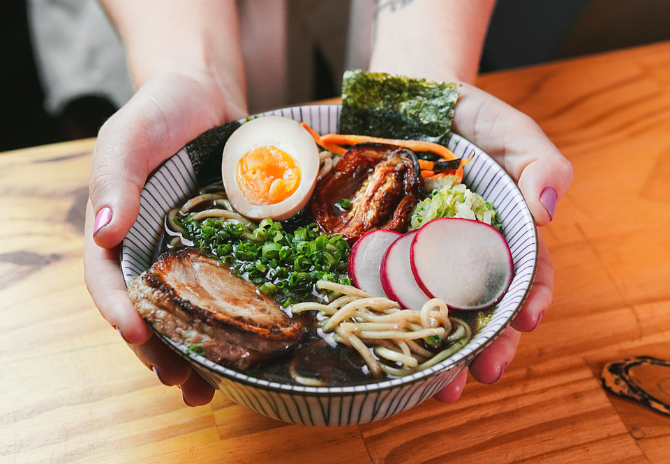

Carbonara, spaghetti alla carbonara ou pasta alla Carbonara, é uma receita tradicional italiana de massa. Acredita-se que tenha sido uma receita apreciada pelos preparadores de carvão vegetal dos montes apeninos, na região italiana da Úmbria.
Yakisoba
Sōsu yakissoba, também conhecido por yakisoba, é um prato de origem japonesa, cujo nome significa, literalmente, "macarrão de sobá frito".

Lamen
Lámen ou rāmen é um alimento japonês. Um prato de lámen normalmente é composto por um tipo de macarrão chinês, uma sopa com caldo à base de ossos de porco, peixe ou frango, e temperados com uma base tarê que dá sabor ao caldo base, para a confecção da montagem do prato, e os adicionais podem variar dependendo da região .